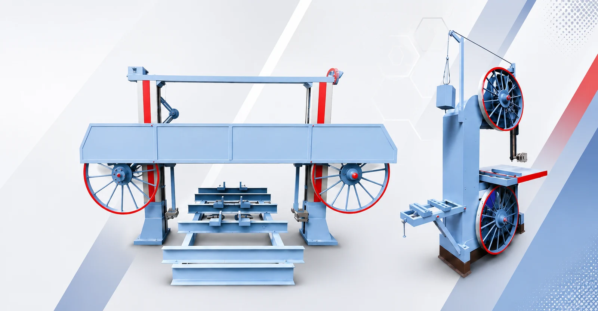

01
Machine Consultation
Technical guidance to help you select the right heavy-duty bandsaw configuration for your material, capacity and work environment.
Talk to our teamTechnical guidance to help you select the right heavy-duty bandsaw configuration for your material, capacity and work environment.
Talk to our teamDurable machine spare parts manufactured to support smooth operation, reliable cutting and longer equipment life.
Talk to our teamScheduled maintenance and expert servicing to keep heavy-duty band saw machines safe, reliable and production-ready.
Talk to our teamOur team supports repairing, overhaul and servicing for heavy-duty bandsaw equipment. We focus on practical, reliable solutions that help your machine return to sustained performance.
Discuss service support ↗
Tell us your machine model, material, capacity or service concern.
We’ll discuss configuration, compatibility and the support you need.
Confirm the scope, quotation and timing directly with our team.
Machinery, genuine parts or service support — we’re here to help.